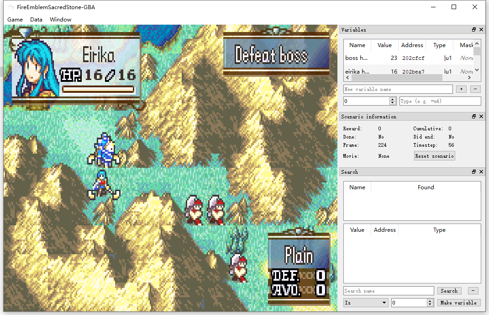

This week, I have been trying to experiment with the gym retro algorithm. I spent a long time trying to understand the brute force approach, including trying to understand the paper that proposes the algorithm. Understanding the algorithm as well as the implementation took me a while because the code lacks comments for a lot of it and the documentation provided regarding that part where not that detailed. As the result, I did not have much time to develop my own version of algorithm. I only started on the development and did not finish the prototype that I can experiment with.
The paper mentioned is "Revisiting the Arcade Learning Environment: Evaluation Protocols and Open Problems for General Agents" by Machado et al.
Link to the paperHere is a picture of the integration UI and the game that was missing from last week.
Next week, I plan to continue developing the prototype algorithm that is supposed to fit better for the turn-based strategy game, expecially for Fire Emblem: The Sacred Stone I am currently experimenting with. Now that I have a better understanding of the Gym Retro API, hopefully I will be able to make more progress and start experimenting and tweaking the algorithm implementation so that it can pass the tutorial level given..